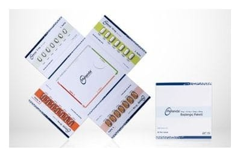

Melanda 5 mg + 10 mg + 15 mg + 20 mg Başlangiç Paketi

Ne için kullanılır
KT · Bölüm 1• MELANDA®5 mg + 10 mg + 15 mg + 20 mg tedaviye başlama paketi, 28 film tabletten oluşmaktadır. Bu film tabletlerin 7 tanesi MELANDA®5 mg film tablet, 7 tanesi MELANDA®10 mg film tablet, 7 tanesi MELANDA®15 mg film tablet ve 7 tanesi MELANDA®20 mg film tablet’den oluşmaktadır.
• Etkin madde, memantin hidroklorür’dür.
MELANDA®, demansa (bunamaya) karşı kullanılan ilaçlar grubundadır.
Alzheimer hastalığında görülen hafıza kaybı, beyindeki mesaj sinyallerinin bozulması nedeniyle ortaya çıkar. Beyinde, NMDA-reseptörü denilen oluşumlar bulunur. Bu oluşumlar, öğrenme ve hatırlama için önem taşıyan sinir uyarısında rol oynarlar. MELANDA®, NMDA reseptör antagonistleri denilen bir ilaç grubuna dahildir ve NMDA reseptörleri üzerinde etki göstererek sinir uyarısını ve hafızayı iyileştirir. MELANDA®, bu etkisi nedeniyle, orta ve şiddetli evre Alzheimer hastalığının tedavisinde kullanılır.